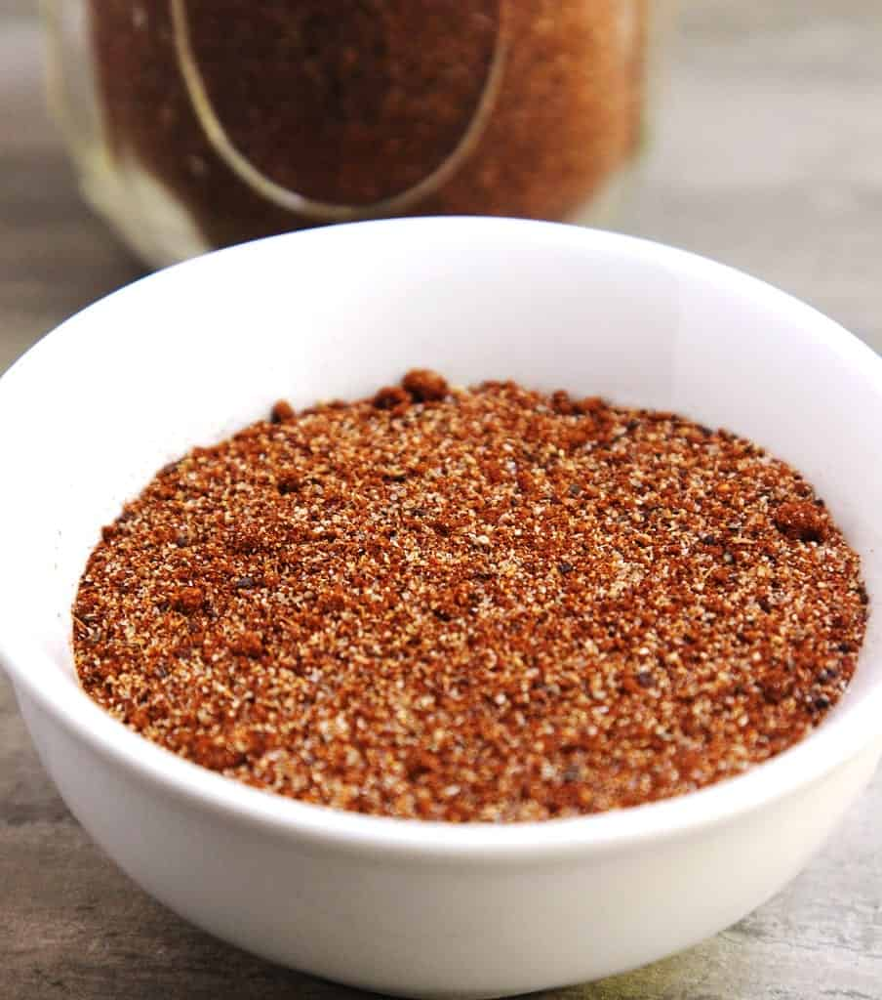

Odin Recipes
Sleipnirs Spicy Butt Rub

A spicy ride on Odins stalwart steed!
A tasty rub for smoking a large piece of meat. Made with 8 easy to find ingredients, this is a perfect choice for smoking a pork butt (aka. shoulder or picnic roast) for pulling, but can be used any place a spicy dry rub is needed.
Ingredients:
- Salt: As much as you need to properly season your butt, too much makes everything taste bad and is unhealthy, so be careful!
- Fresh Cracked Black Pepper: 2 teaspoons, or as much as you can handle/prefer, it needs to be peppery...
- Smoked Paprika:2 teaspoons. Doesn't strictly have to be smoked, but definitely Do not skip this, or you will regret it!
- Cayenne Pepper: 2 teaspoons. Some guy on the TV told me to say 'BAM!' here then add 2 teaspoons more, this is optional.
- Onion Powder:2 teaspoons. Because it tastes good?
- Garlic Powder:2 tablespoons. For you Health and to keep the Vampires away.
- Brown Sugar:1/4 cup. It may sound like alot, but trust me, it is ok.
- Fresh Ground Coffee:1/2 to 1 teaspoon. I know this sounds weird, but it is the secret ingredient that makes everything amazing. Make sure to grind it nice and fine
Preparation:
- In a medium size bowl, combine all ingredients
- Mix well until fully incorporated. I find a fork or a small wire whisk to work adequately.
- Evenly spread over entire surface of your piece of meat. optional: before applying rub, thinly coat meat with your favorite mustard.
- Cook your meat! This is a rub recipe, not a meat smoking tutorial, I am sure you can figure it out!
This rub can also be used as a seasoning for most any meat, and can be changed to your taste, be adventurous!
Odin Recipes